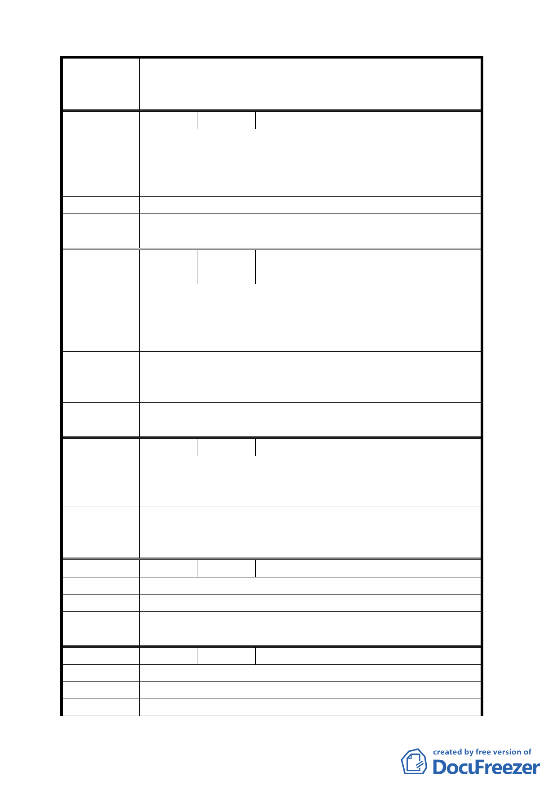

案名
編號
陳情理由
建議辦法
委員會
決議
編號
陳情理由
建議辦法
委員會
決議
編號
陳情理由
建議辦法
委員會
決議
編號
陳情理由
建議辦法
委員會
決議
編號
陳情理由
建議辦法
委員會
變更臺北市華光社區暨週邊地區住宅區、電信用地、郵
政用地及變電所用地土地為商業區、數位科技專用區及
金融服務專用區主要計畫案
10 陳情人 丁志偉
1.請市政府先行考量本計畫區內住戶安置問題及補償事
宜後，再重新計畫本案。
2.若將來市府要標售本地段時，需由原住戶為第一優先
購買者。
同編號 2 決議。
11
陳情人
董大全、董幼琴、朱志中、鄭麗英、
程維翰
1.請市政府先行考量本計畫區內住戶安置問題及補償事
宜後，再重新計畫本案。
2.若將來市府要標售本地段時，需由原住戶為第一優先
購買者。
因住戶地上權為合法持有，請市政府在本案興建住
宅，原地安置住戶，或按市價補償拆遷費用，以便住戶
有屋可住。
同編號 2 決議。
12 陳情人 鄭明義
1.經濟慘澹，無力租、購屋，請基於仁民愛物情操給予
安置。
2.本屋經有價取得，為善意第三者。
建議規劃現住戶安置位所，協調安置辦法。
同編號 2 決議。
13 陳情人 趙英樞
希由市政府主導另地安置，或以屋換屋辦法解決。
同編號 2 決議。
14 陳情人
不同意。
就地安置。
同編號 2 決議。
劉稻子
- 12 -